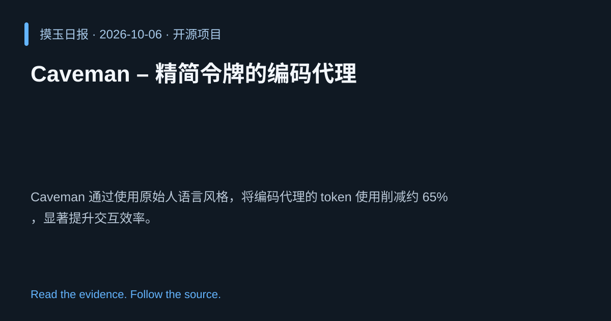

2026-10-06 · Asia/Shanghai · 开源项目 · #17
Caveman – 精简令牌的编码代理
JuliusBrussee/caveman
Caveman 通过使用原始人语言风格，将编码代理的 token 使用削减约 65%，显著提升交互效率。
为什么值得关注
在受 token 限制的模型环境中降低成本并提升响应速度。

热度 20.0 / 100；排名与评分保留该期记录。
2026-10-06 · Asia/Shanghai · 开源项目 · #17
JuliusBrussee/caveman
Caveman 通过使用原始人语言风格，将编码代理的 token 使用削减约 65%，显著提升交互效率。
在受 token 限制的模型环境中降低成本并提升响应速度。

热度 20.0 / 100；排名与评分保留该期记录。